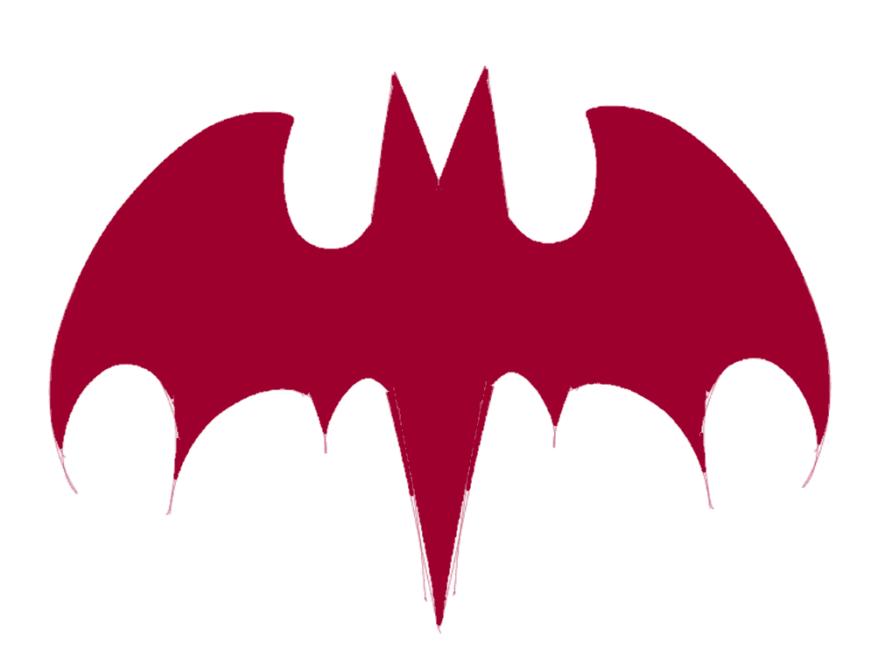
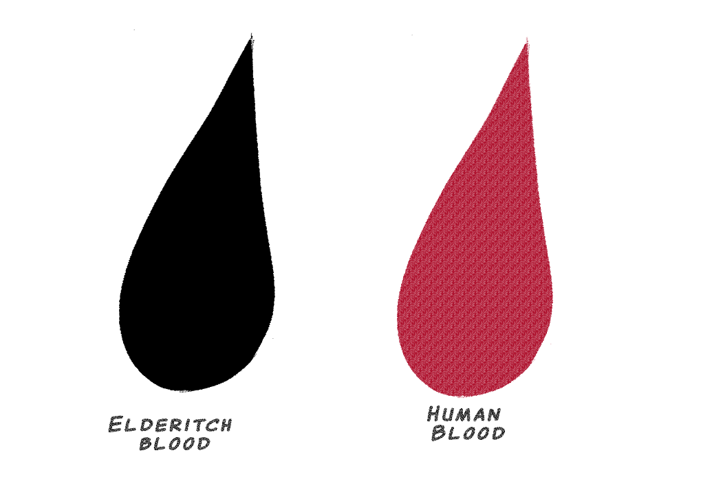
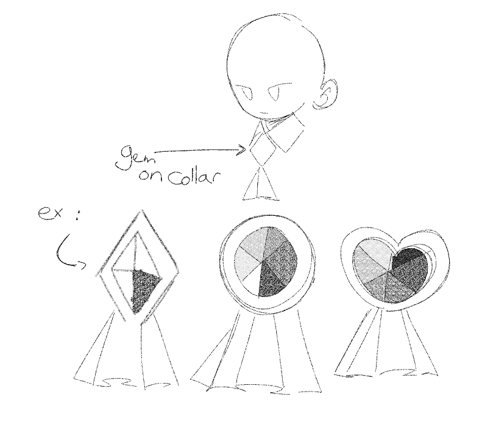

Vampires
Vampires belong to the Elderitch undead category in Deathenize.About Vampires
Unlike the traditional vampires that live on human blood, El vampires actually live
on el blood, most often taken from fragile citizens. Weirdly, in the course of a
battle, they also drink the blood of other vampires, but to them, that's like
tasting salad. Vampires are born vampires from the start. The oldest and wisest
vampires are, of course, the most powerful.

An important thing to know is that if El vampires were to taste human blood, it would turn into a very addictive drug in their mindset; it's not something they would likely be able to handle properly.

Vampire class, and classification
Vampires can be divided into three classes:

Commoners
Despite being less powerful than the other two classes of vampires, commoners can
withstand moonlight longer.
Commoner vampires are just regular vampires classified as normal El citizens. Most
of them also seem to be more modernized and live in the El cities.
*Dave is a commoner
Nobles, Servants, Dukes
A visible trait of noble vampires is that they have a red gem on their collar(can be
any shape). Nobles can withstand moonlight for a moderate amount of time but can
burn into ashes when in contact with it for too long.
Many of them can act like self-centered snobs, but some of them can also be quite
friendly; that depends, of course, on the noble. They are also, of course, in charge
of holding traditional events relating to the vampire clans and in charge if the el
blood distribution.
Lords
A powerful trait that lords have is that they can summon hordes of ravens and bats
and also can camouflage into one, unlike other vampires. However, they can be easily
burned when they come in contact with moonlight.
The most powerful vampires, they occasionally live in mansions. Most often, them
tend to be very old in age and have probably experienced the Dark El Age. They feel
nostalgia, preferring the time when the realm used to be darker and more wretched.
They are the most sheltered due to their weakness to moonlight .
*Drac is a retired lord
Geography
Most of the vampires live in the southern part of the el realm, where the climate
tends to be cooler and the sky darker. Some areas are also shrouded in mist, serving
as protection against the moonlight. Much of the architecture is based on Romantic
Gothic styles. They prefer to reside in reclusive villages or cities rather than in
the outside world of shiny technology and busy traffic, preferring a peaceful life
in the shadows of the moonlight.

© 2023-2024 DEATHENIZE. All rights reserved.